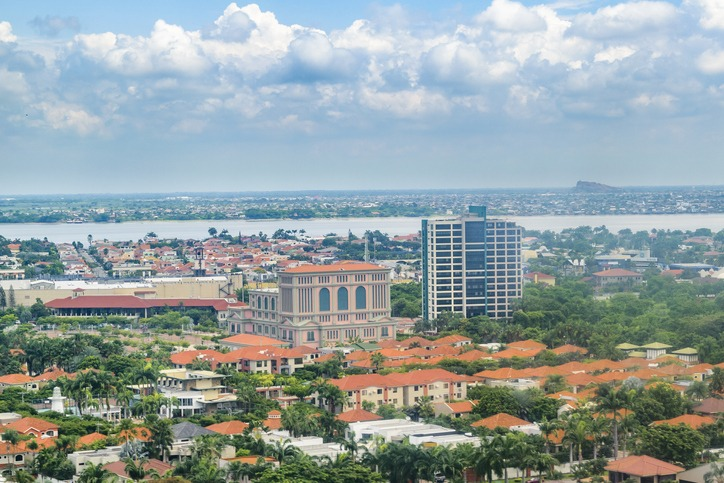

La Vía Samborondón se encuentra en la provincia del Guayas, Ecuador, y es una de las
principales arterias de conexión entre Guayaquil, Samborondón y Daule. Esta vía
comienza en el Puente de la Unidad Nacional, que cruza el río Guayas y conecta con
Guayaquil, y se extiende hacia el noreste, atravesando sectores urbanos y rurales de
Samborondón y La Aurora (Daule)
Desde su desarrollo en la década de 1990, la Vía Samborondón se ha consolidado como un
corredor estratégico para el crecimiento residencial y comercial del Gran Guayaquil. A
lo largo de la vía se encuentran urbanizaciones privadas, centros comerciales, oficinas,
instituciones educativas y espacios recreativos, lo que ha generado un aumento significativo
en su plusvalía y en la demanda de servicios

ANTECEDENTES
La Av. Samborondón ha cambiado significativamente desde sus inicios como una vía de acceso a áreas
agrícolas hasta convertirse en un corredor urbano y comercial de alto impacto. En particular, el
sector comprendido entre Entre Ríos y la Av. Kennedy se ha consolidado como una de las zonas de
mayor desarrollo inmobiliario y comercial en el cantón Samborondón.
DESARROLLO HISTORICO
Durante la década de 1990, la expansión urbana de Samborondón inició con la construcción de
urbanizaciones privadas y el establecimiento de importantes centros comerciales y de
entretenimiento. Un punto clave en este crecimiento fue la inauguración del Riocentro
Entre Ríos en 1995, el primer centro comercial de la zona, que incluyó salas de cine y
tiendas ancla, marcando el inicio de un auge comercial en la avenida
(Municipio de Samborondón, 2023).
Con el paso del tiempo, la presencia de instituciones educativas, bancos y oficinas corporativas
atrajo más inversión, consolidando este tramo como un eje financiero y empresarial.
OBJETIVO GENERAL
Desarrollar una propuesta de renovación urbana, desarrollada a nivel de anteproyecto,
que incorpore estrategias urbanas integrales. Estas estrategias deben contemplar
aspectos sociales y económicos, así como la integración de espacios verdes y ciclovías,
con el objetivo de mejorar el confort de los usuarios, fomentar la inclusión social y
fortalecer la percepción de seguridad en el área.
Realizar un estudio para identificar las deficiencias en
la trama urbana y la falta de infraestructura moderna
mediante observación y análisis. Esto permitirá comprender
las necesidades del entorno y proponer soluciones adecuadas.
Incorporar especies de vegetación nativa en el diseño urbano
para mejorar la regulación térmica, fomentar la biodiversidad
y garantizar su adaptación al entorno. Esto contribuirá a un
ambiente más sostenible y confortable.
OBJETIVOS ESPECIFICOS
JUSTIFICACION
En las ciudades con escasez de áreas verdes y un predominio de superficies pavimentadas,
se genera el fenómeno de "isla de calor urbano", que provoca un aumento significativo de
la temperatura y afecta la calidad de vida. La falta de vegetación impide la regulación
térmica y agrava el problema, generando espacios poco confortables y perjudicando el
bienestar de los habitantes. Otro problema presente en la zona es la existencia de espacios
muertos, áreas subutilizadas que representan un desaprovechamiento del suelo en entornos de
alta demanda. Estos espacios, como terrenos baldíos o zonas residuales detrás de construcciones,
generan inseguridad y afectan la imagen urbana. Además, la falta de infraestructura adecuada
para ciclistas dificulta la movilidad sostenible en la ciudad. Actualmente, la ausencia de
ciclovías seguras obliga a los ciclistas a compartir la vía con vehículos o peatones, lo que
compromete su seguridad.
Para contrarrestar estos efectos, es fundamental integrar áreas verdes en el diseño urbano, ya
que ayudan a disminuir la temperatura, mejorar la calidad del aire y ofrecer espacios de recreación
que favorecen la salud y la convivencia social. Transformar los espacios muertos en áreas funcionales,
como plazas o parques, no solo optimiza el uso del suelo, sino que también mejora la calidad de vida
y fomenta un entorno más dinámico y accesible. Asimismo, implementar una red de ciclovías exclusivas
permitiría desplazamientos más eficientes y seguros, promoviendo el uso de la bicicleta como alternativa
al transporte motorizado. Esto no solo reduciría la contaminación y el tráfico, sino que también
contribuiría a una movilidad más ordenada y sustentable.
SITIO
Ubicación: Vía Samborondón y Zona EntreRios
DATOS GENERALES
Rutas: Se extiende desde la zona de La Puntilla hasta el centro
de Samborondón y es una de las vías más importantes de la zona
debido a su función como corredor comercial, residencial y de
conexión con Guayaquil.
Temperatura: La temporada calurosa dura 1,3 meses, de noviembre a enero, y la
temperatura máxima promedio diaria es más de 31 °C y la temporada
fresca dura 1,8 meses de junio hasta agosto, y la temperatura de
30 °C. (Weatherspark, 2025).
Zona Comercial y Residencial con diferentes sitios como:
Iglesia Santa Teresita
C.C Village
C.C Ríocentro
Clínica Kennedy
C.C. La Piazza
RENACIMIENTO URBANO
Representa una transformación innovadora que potencia su dinamismo, conectividad y atractivo.
Este proceso impulsa un entorno vibrante y sostenible, integrando espacios modernos,
infraestructura eficiente y áreas verdes que elevan la calidad de vida, fortalecen la
identidad local y generan nuevas oportunidades de desarrollo económico y social.
PROPUESTAS
PLANTEAMIENTO DE PROPUESTAS PARA LA ZONA DE ENTRERIOS Y VÍA SAMBORONDÓN
IMPLEMENTACIÓN DE ACCESIBILIDAD UNIVERSAL:
RAMPAS, SEÑALIZACIÓN PODOTÁCTIL Y MOBILIARIO INCLUSIVO.
INCORPORACIÓN DE ARBOLADO URBANO:
ESPECIES NATIVAS PARA DAR SOMBRA Y MEJORAR EL MICROCLIMA.
DISEÑO PAISAJÍSTICO:
USO DE VEGETACIÓN AUTÓCTONA Y CORREDORES ECOLÓGICOS PARA BIODIVERSIDAD.
REDISEÑO DEL PERFIL VIAL:
CREAR CARRILES DE BICICLETAS Y REDUCIR EL IMPACTO DEL TRÁFICO.
PROPUESTAS
PROPUESTA FOODTRUCK SPACE
PROPUESTA PARQUE VITALIA
PROPUESTA ZONA ENTRE RIOS
Torre A
Torre B
Torre C
Vegetación
Ciclovía
Acera
Camineras
Cruce Peatonal
Semaforos
Buena Vista Plaza
Av. Samborondón
Retorno
Av. Principal de Entre Ríos
Av. Río Vinces
Parqueo
CONCLUSIÓN
El Masterplan de la Avenida Samborondón y Entre Ríos representa un avance significativo en
la transformación urbana de la zona, priorizando la sostenibilidad, la movilidad peatonal
y la integración de espacios verdes en un sector de alta densidad residencial y comercial.
La implementación de ciclovías, áreas verdes y parques de interacción social no solo mejora
la calidad de vida de los residentes, sino que también fomenta una ciudad más inclusiva y resiliente.
Además, el rediseño de Entre Ríos refuerza el carácter urbano del área al optimizar su funcionalidad
y conexión con el entorno, promoviendo una mayor accesibilidad y dinamismo. En conjunto, estas
intervenciones consolidan un modelo de desarrollo urbano que equilibra el crecimiento con el bienestar
comunitario, posicionando a Samborondón como un referente en planificación sostenible dentro del país.